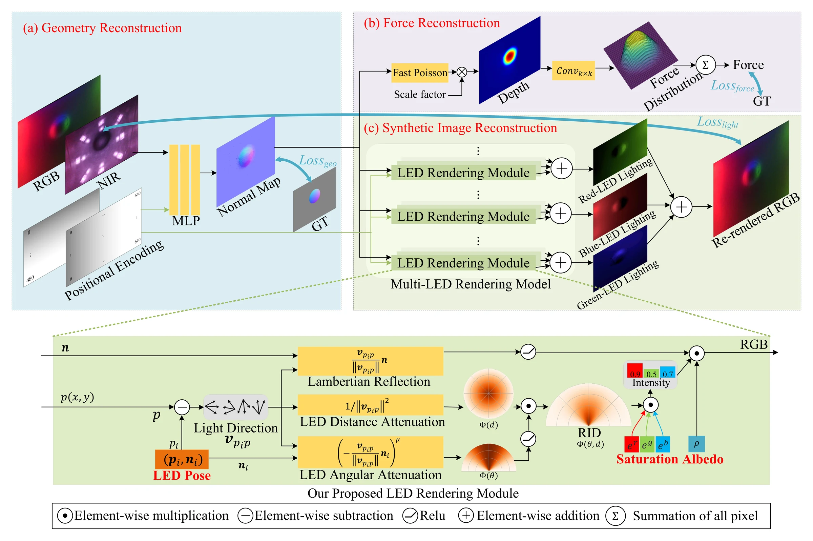
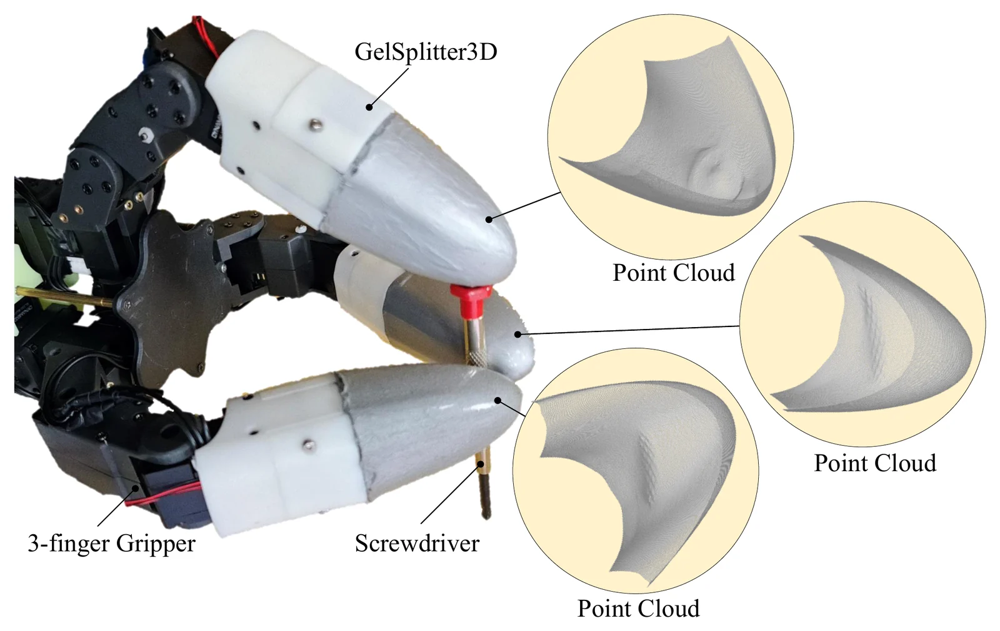
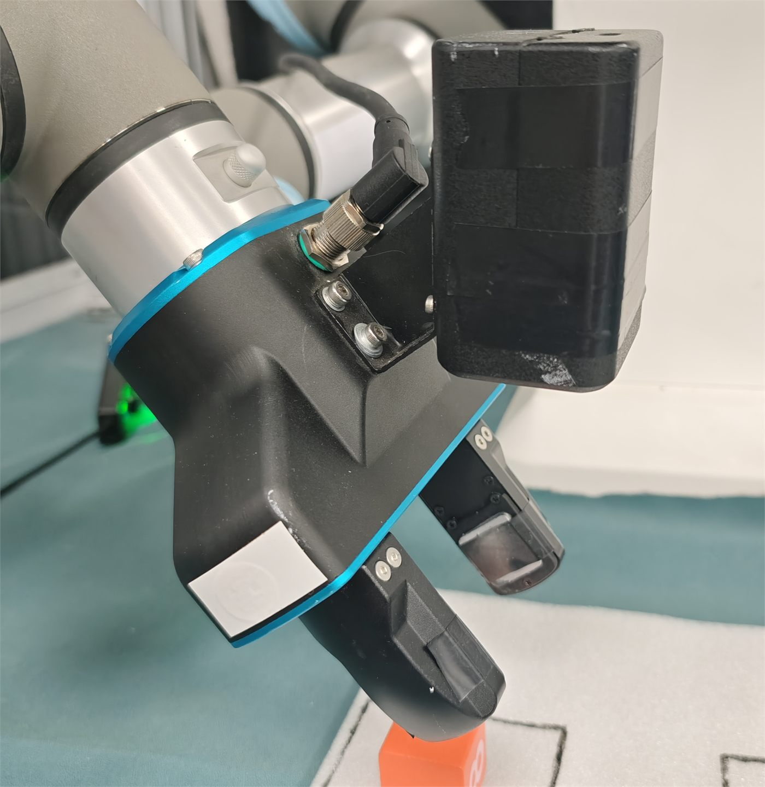
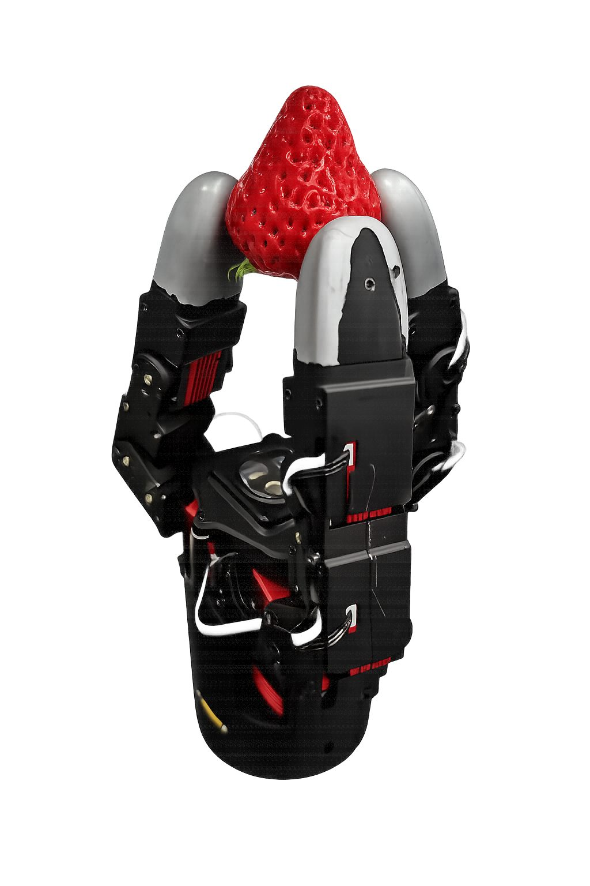
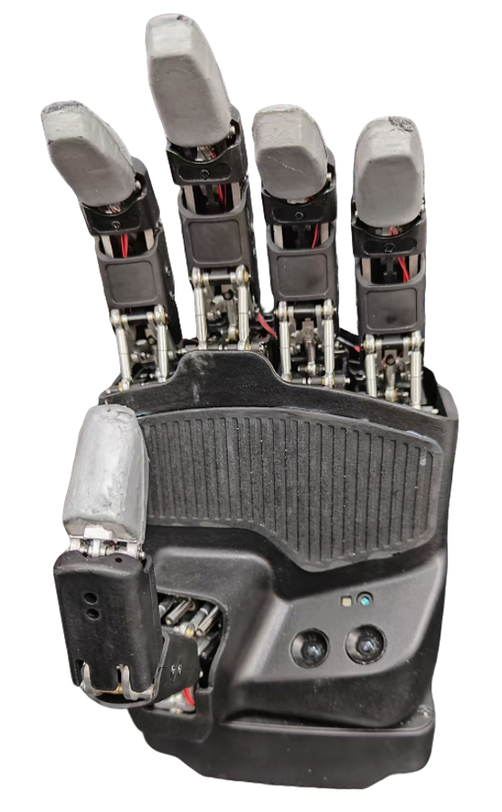
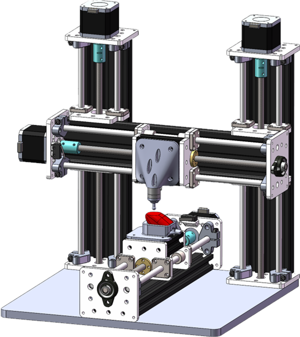

2024 - 2027
M.Eng. in Mechanical Engineering
Huazhong University of Science and Technology, Wuhan, China
Expected graduation: June 2027
Thesis: High-speed, high-precision vision-based tactile sensing for robotic dexterous hands.
I am an M.Eng. student in Mechanical Engineering at Huazhong University of Science and Technology, advised by Prof. Hua Yang, with expected graduation in June 2027. My research focuses on vision-based tactile sensing and visuotactile learning for dexterous, contact-rich robotic manipulation.
My work spans tactile sensor design, 3D geometry reconstruction, three-axis force estimation, and real-time FPGA deployment. I also work on visuotactile fusion, imitation learning, and simulation-to-real transfer for multi-scale fine manipulation, connecting contact perception with robot action learning.
Huazhong University of Science and Technology, Wuhan, China
Expected graduation: June 2027
Thesis: High-speed, high-precision vision-based tactile sensing for robotic dexterous hands.
Huazhong University of Science and Technology, Wuhan, China
Selected peer-reviewed work. My name is shown in bold.

A compact RGB-NIR tactile fingertip combining boundary-prior 3D reconstruction, position-aware three-axis force estimation, and a low-latency FPGA perception pipeline.
arXiv:2607.28416; submitted to IEEE/ASME Transactions on Mechatronics, 2026

High-precision tactile reconstruction, self-calibration, and synthetic tactile image generation with RGB-NIR sensing.
IEEE/ASME Transactions on Mechatronics, 2025

A curved RGB-NIR tactile fingertip with neural photometric stereo and geometry-prior normal integration.
IEEE/RSJ International Conference on Intelligent Robots and Systems (IROS), 2025
Selected research and engineering work across tactile sensing, robot learning, and deployment.
Led the development of a compact curved RGB-NIR tactile sensing system spanning sensor design, synchronized multispectral imaging, boundary-prior 3D reconstruction, HyperForce three-axis force estimation, and FPGA edge deployment.
Implemented hardware-oriented pipelines for surface-normal inference, boundary-prior depth reconstruction, and normal-force estimation on Xilinx Zynq UltraScale+ platforms.
Depth mean absolute error is 0.0415 mm. The FPGA image-to-normal-force pipeline achieves 1.09 ms/frame latency and 8.41 mJ/frame energy consumption. Computation rates reach 1022 Hz for image-to-depth and 918 Hz for image-to-normal-force.
Worked on visuotactile imitation learning for multi-scale, contact-rich bimanual manipulation. The project combines tactile-informed simulation data generation, memory-efficient multimodal sparse attention, and multi-expert action learning to address limited demonstrations, small-target perception, and coarse-to-fine action coordination.
Reduces memory usage for multi-scale fusion from 24 GB to 7.4 GB. The complete method achieves a 100% success rate in the evaluated 800-step simulated long-horizon embroidery task.
Assisted with mechanical design for two-finger grippers, three-finger grippers, and five-finger dexterous hands. Responsible for end-effector vision-based tactile sensor design, 3D reconstruction and force estimation algorithms, calibration, testing, and system integration.
Delivered vision-based tactile sensor prototypes and accompanying technical documentation for two-finger, three-finger, and five-finger platforms.
Industry Impact. My work on vision-based tactile sensor adaptation, calibration, and perception algorithms supported Zhejiang Shiyue Technology (LumiBot) in developing the Lumi-Tac vision-based tactile sensor and Lumi-Dex dexterous-hand product line.
Developed SMF-PSNN for near-field multi-source illumination self-calibration, surface-normal and depth reconstruction, and RGB-NIR tactile image synthesis. The calibrated rendering model generates transferable tactile observations for pose estimation, fingerprint recognition, and slip detection.
Neural inverse rendering reaches 30.22 dB PSNR, improving by 6.33 dB over the single-light-source baseline.
Hardware systems I helped build for vision-based tactile manipulation.



